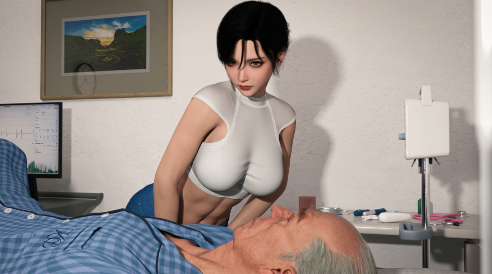

Khi Hằng rời đi, Lão Tứ vẫn nằm ôm Tiểu Mỹ ngủ trong căn phòng tập nhỏ.
Máy lạnh chạy yếu, tiếng quạt thông gió kêu rè rè trên cao. Mùi dầu xoa bóp, mùi mồ hôi và mùi cao su của thảm tập trộn vào nhau thành một thứ mùi ngầy ngậy. Ngoài cửa kính mờ, bóng người đi qua đi lại thỉnh thoảng lướt ngang, rồi mất hút.
Lão Tứ ngủ rất say.
Lão nằm nghiêng, một tay vắt qua eo Tiểu Mỹ, mặt phè phỡn như vừa thắng được một ván bạc lớn. Cái thân già của lão sau mấy ngày tập tành, giãn cơ, rồi bị Tiểu Mỹ dỗ dành, giờ rã ra như bún. Nhưng trong giấc ngủ, lão vẫn có vẻ mãn nguyện. Đời lão, có lúc chỉ cần vậy là đủ. Một căn phòng kín. Một đứa con gái trẻ. Một chút cảm giác mình chưa hoàn toàn già.
Tiểu Mỹ thì không ngủ sâu như lão.
Cô nằm im một lúc, mắt mở hé, nhìn đồng hồ treo tường. Cô biết lát nữa sẽ có PT khác tới lấy phòng. Cái phòng này thuê chung, ai có khách thì đăng ký theo giờ. Quá giờ là bị nhắc, bị cằn nhằn, có khi còn mất lượt hôm sau.
Chuông báo trong điện thoại vang lên.
Tiểu Mỹ giật mình, vội tắt máy. Cô ngồi dậy, kéo tóc ra sau gáy, rồi cúi xuống nhặt quần áo mặc vào. Động tác cô nhanh, quen, không có vẻ lúng túng. Chỉ có ánh mắt là hơi lo. Cô liếc nhìn Lão Tứ vẫn còn nằm đó, bụng phập phồng, miệng hé ra thở.
Cô lay vai lão.
“Ông ơi, dậy đi thôi, PT khác sắp lấy phòng.”
Lão Tứ nhíu mày, ú ớ trong cổ.
“Ừ… ừ…”
Lão chống tay ngồi dậy.
Cái đầu còn nặng. Cái lưng mỏi. Hai đùi ê ẩm như bị ai dùng cây đập suốt đêm. Lão cau mặt, đưa tay dụi mắt, rồi lồm cồm đứng lên.
Ngay khoảnh khắc bàn chân trái vừa đặt xuống sàn, trong người lão như có thứ gì đó bật mạnh một cái.
Một tiếng đứt không thành âm.
Nó không vang ra ngoài, nhưng lão nghe rõ ở bên trong. Như sợi dây mục bị kéo quá căng rồi phựt ra. Cơn đau từ đùi trong xộc thẳng lên háng, tê buốt, lạnh ngắt, làm mặt lão trắng bệch.
Lão khựng lại.
Rồi cả người đổ nghiêng.
Tiểu Mỹ hoảng hồn lao tới đỡ.
“Ông sao thế?”
Lão Tứ há miệng, một tay chụp lấy đùi mình, mặt méo xệch.
“Chết tao rồi, sao đùi trong tao đau quá!”
Tiểu Mỹ tái mặt.
Cô nhìn chỗ lão ôm, rồi nhìn lão. Trong đầu cô chạy qua một loạt hình ảnh lộn xộn: cảnh lão địt sâu vào lồn cô, cảnh lão dập như máy, cảnh lão tập Gym hôm trước, cảnh phần cơ còn căng cứng lúc nãy.
Cổ họng cô khô lại.
“Hay lúc nãy làm mạnh quá…”
Lão Tứ rít lên.
“Đứt dây chằng háng rồi…”
Câu nói vừa ra khỏi miệng, cả hai đều im.
Tiểu Mỹ đỡ lão ngồi xuống ghế. Lão thở hồng hộc, mồ hôi túa ra trên trán. Cái đau không dịu đi. Nó nằm sâu trong đùi, mỗi lần lão nhúc nhích là giật lên, như có con dao nhỏ cắm trong thịt rồi xoay nhẹ.
Tiểu Mỹ nhìn đồng hồ thêm lần nữa.
Cô biết không thể để lão nằm đây. Nếu PT khác tới, nếu chủ phòng hỏi, nếu chuyện này lộ ra, cô không biết phải nói thế nào. Một ông già bị đau háng trong phòng tập riêng với cô. Dù nói giãn cơ hay tập sai động tác, nghe cũng không sạch.
Cuối cùng, cô gọi xe, dìu Lão Tứ ra ngoài.
Lão vừa đi vừa rên, nửa người gần như dựa hẳn vào vai cô. Tiểu Mỹ là PT nên cũng khỏe, đỡ được hẳn lão Tứ ra ngoài. Ra đến cửa, cô nhìn trước nhìn sau, vẫy vội chiếc taxi rồi nhét lão vào trong.
Đến bệnh viện, cô đưa lão vào khu cấp cứu.
Khai được cái tên, tuổi, tình trạng đau đùi trong, cô đã bắt đầu thấy sống lưng lạnh toát. Điều dưỡng hỏi đi cùng là ai, bị khi nào, nguyên nhân thế nào. Tiểu Mỹ cười gượng, nói lão tập bị căng cơ, rồi nhân lúc người ta đẩy Lão Tứ vào trong, cô lùi dần ra cửa.
Một lát sau, cô biến mất.
Không một lời chào.
Không một tin nhắn.
Lão Tứ nằm trên băng ca, mặt nhăn như khỉ ăn ớt, nhìn quanh mới biết chỉ còn mình lão. Cái thân già nằm giữa bệnh viện, bên cạnh toàn người lạ. Tiếng bánh xe đẩy, tiếng gọi tên bệnh nhân, tiếng dép nhựa của điều dưỡng kéo trên nền gạch trắng. Mùi thuốc sát trùng làm lão buồn nôn.
Điều dưỡng cúi xuống hỏi người nhà.
Lão Tứ nằm im một lúc.
Trong đầu lão lướt qua mấy cái tên.
Vân thì giờ ở căn hộ xịn, bận tối mắt tối mũi, khai trương, gặp khách, chụp hình, hội nghị. Gọi chắc gì đã nghe. Có nghe cũng chưa chắc tới.
Lan thì có đám con nhỏ bám quanh, mà gọi Lan tới trong tình cảnh này, lão cũng thấy quê.
Cuối cùng, lão đọc tên Mai.
Rồi đọc số điện thoại của cô.
Cái tên đó đi ra khỏi miệng lão chậm chạp, như người ta móc trong túi ra đồng bạc cuối cùng.
Suy cho cùng, lúc nằm một mình trên giường bệnh, người lão nhớ tới vẫn là Mai.
Trong cái nhà rách nát ấy, Mai là người duy nhất còn có thể chạy tới khi lão gọi.
Bệnh viện làm thủ tục cho lão vào phòng dịch vụ riêng. Lão Tứ được đẩy lên giường, bác sĩ khám, dặn chờ chụp chiếu thêm, có khả năng tổn thương vùng cơ khép hoặc dây chằng do vận động quá sức. Lão nghe chữ được chữ mất. Chỉ biết cái chân đau, cái háng đau, còn người thì nhục.
Phòng dịch vụ sạch sẽ, có máy lạnh, có tivi, có rèm cửa màu kem. Trần nhà trắng tinh. Cái giường có nút bấm nâng lên hạ xuống. Mọi thứ đều tiện hơn cái võng ở nhà.
Nhưng lão nằm một lúc đã thấy chán.
Cũng là nằm, mà sao nằm võng ở nhà không chán. Còn ở đây chán bỏ mẹ ra.
Ở nhà còn nghe tiếng người cãi nhau, tiếng chén bát, tiếng Mai đi qua đi lại, tiếng trẻ con trong xóm, tiếng xe máy ngoài hẻm. Ở đây chỉ có tiếng máy lạnh, tiếng dép y tá ngoài hành lang, và cái mùi bệnh viện lạnh lẽo như nhắc người ta nhớ mình sắp già thật.
Lão nhìn lên trần nhà, thở dài.
Một lúc sau, cửa phòng mở.
Mai đứng ngoài cửa.
Cô vẫn mặc đồ đi làm, tóc buộc gọn, mặt còn hơi mệt. Có lẽ cô vừa bỏ dở việc để chạy tới. Tay cô cầm túi xách, mắt nhìn lão từ đầu đến chân. Cái nhìn ấy không hốt hoảng, cũng không dịu dàng ngay. Nó là cái nhìn của một người đã quá quen với việc người khác gây chuyện rồi mình phải tới dọn.
Lão Tứ vừa thấy cô thì mắt sáng lên.
Cái mặt già nhăn nhúm bỗng mừng rỡ như trẻ con thấy mẹ.
“Mai… Mai…”
Mai thở dài, bước vào rồi khép cửa lại.
Cô đặt túi lên ghế, đứng cạnh giường nhìn lão. Lão nằm đó, một chân hơi co, mặt vừa đau vừa quê. Cái dáng ấy nếu không đáng giận thì cũng đáng thương.
Mai im lặng vài giây.
Rồi cô nói:
“Con hỏi bác sĩ rồi. Ba quan hệ tình dục quá đà à?”
Mặt Lão Tứ cứng lại.
Hai tai lão đỏ lên. Lão quay mắt nhìn sang bên, cổ họng khụt khịt.
“Đâu có… do bữa tập gym căng cơ quá, xong giãn cơ với Tiểu Mỹ nên bị…”
Mai nhìn lão.
Ánh mắt cô lạnh xuống.
Không cần nói thêm, cô cũng hiểu đủ. Lan chưa qua được mấy ngày. Giờ lại đến Tiểu Mỹ. Cái tuổi của lão đáng lẽ phải biết giữ mình, biết sợ bệnh, sợ nhục, sợ người ta nhìn. Vậy mà lão vẫn cứ như con thiêu thân, thấy lửa là lao vào.
Mai kéo ghế ngồi xuống cạnh giường.
Lão Tứ lén nhìn cô, cười gượng.
Cái cười ấy làm Mai càng tức.
Cô đưa tay nhéo mạnh vào đùi non lão.
Lão giật bắn người, kêu lên một tiếng.
“Ái da!”
Mai nghiến giọng:
“Già rồi không nên nết.”
Lão Tứ vừa đau vừa buồn cười, mặt méo nhưng vẫn cười hè hè.
“Đời mà. Ba già rồi, kệ ba đi.”
Mai đứng dậy ngay.
“Vậy kệ ba nhé, con về đây.”
Lão Tứ hoảng thật.
Lão chồm tay ra nắm lấy cổ tay Mai. Cử động mạnh làm cơn đau lại kéo lên, lão rên một tiếng, nhưng vẫn không buông.
“Ôi không, con đừng bỏ ta.”
Mai nhìn bàn tay lão đang nắm tay mình.
Bàn tay đó già, da nhăn, gân nổi lên, móng hơi vàng vì thuốc lá. Một bàn tay vừa đáng ghét vừa tội nghiệp. Bàn tay từng kéo cô lại khỏi Hoàng, từng khiến cô khóc, từng làm cô thất vọng. Nhưng cũng là bàn tay của người trong nhà. Một kiểu người nhà lộn xộn, phiền phức, bẩn tính, không biết điều, nhưng vẫn nằm đó gọi tên cô khi không còn ai khác.
Mai không giật tay ra.
Cô đứng một lúc, rồi ngồi xuống lại.
Lão Tứ thấy vậy mới thở phào. Cái mặt lão giãn ra, nhưng vẫn còn vẻ sợ. Có lẽ lão sợ thật. Sợ bị bỏ lại một mình trong căn phòng trắng này. Sợ cái đau ở đùi. Sợ cái thân già từ nay không còn nghe lời mình nữa.
Mai nhìn lão, giọng nhỏ xuống, không còn sắc như lúc nãy.
“Hết Lan rồi Tiểu Mỹ…”
Cô bỏ lửng câu đó.
Phần còn lại mắc lại trong cổ.
Hết Lan rồi Tiểu Mỹ. Hết lần này đến lần khác. Hết xấu hổ này đến xấu hổ khác. Cô không biết mình giận lão vì lão hư, hay buồn vì lão không hề nghĩ đến cảm giác của mình. Cũng có thể cả hai.
Lão Tứ nằm im.
Lần này lão không cười nữa.
Ngoài hành lang, có tiếng xe đẩy thuốc lăn qua. Bánh xe nghiến nhẹ trên nền gạch, đều đều, khô khốc.
Mai cúi nhìn bàn tay mình vẫn bị lão nắm.
Cô thở ra.
Không buông.
Ở trong viện lại hóa ra hay.
Ít nhất là với Lão Tứ.
Mấy ngày đầu lão còn đau thật. Cái chân nhúc nhích một chút là nhói, đùi trong căng cứng, bước xuống giường phải vịn thành, mặt méo như khỉ. Bác sĩ dặn nghỉ ngơi, hạn chế vận động mạnh, theo dõi thêm. Mai nghe kỹ từng lời, còn lão thì nằm trên giường, mắt liếc cô, trong bụng vừa quê vừa khoái.
Vì từ hôm đó, ngày nào Mai cũng tới.
Cô bỏ bớt việc ở công ty, tranh thủ sáng ghé qua, trưa mang cơm, chiều lại chạy vào một vòng. Có hôm tóc còn ướt mồ hôi, áo chưa kịp thay, Mai đã ngồi xuống cạnh giường, mở hộp cháo, lấy khăn lau tay cho lão.
Lão Tứ ban đầu còn ngượng, sau quen dần.
Rồi quen quá hóa hư.
Sáng ra, lão nằm rên hừ hừ như người sắp chết. Điều dưỡng vừa đi khỏi, lão lại ngoẹo đầu nhìn ra cửa, chờ bóng Mai. Nghe tiếng dép của cô ngoài hành lang, lão lập tức nhăn mặt, tay đặt lên bụng, chân hơi co lại như đau lắm.
Mai bước vào, nhìn cái mặt đó là biết.
Nhưng cô vẫn đặt túi xuống, kéo ghế ngồi bên cạnh.
“Lại đau à?”
Lão Tứ thở ra một hơi dài, giọng yếu như giấy ướt.
“Đau… đau lắm. Cái chân này chắc hư luôn rồi.”
Mai không nói gì, chỉ mở hộp cháo.
Cháo còn nóng, khói bay lên nhè nhẹ. Cô thổi từng muỗng rồi đưa tới miệng lão. Lão há miệng ăn, môi nhóp nhép, mắt lim dim. Cái vẻ hưởng thụ của lão lộ rõ đến mức Mai muốn mắng, nhưng nhìn mái tóc bạc lưa thưa trên đầu lão, rồi nhìn cái cổ gầy hơn mấy hôm trước, cô lại thôi.
Lão ăn xong còn cố ý để dính chút cháo bên mép.
Mai lấy khăn giấy lau cho lão.
Lão ngồi yên, để cô lau. Cái mặt già ngoan ngoãn như trẻ con. Lúc cô lau xong, lão còn chép miệng mấy cái, làm ra vẻ mệt nhọc sau một bữa ăn to tát lắm.
Mai thở dài.
“Ba khỏe rồi đó. Đừng có làm bộ.”
Lão Tứ liền nhắm mắt, rên khẽ.
“Khỏe gì mà khỏe. Trong người còn yếu lắm. Con không biết đâu.”
Mai nhìn lão.
Cô biết lão diễn.
Nhưng cô cũng biết, lão thích được chăm. Thích có người tới, thích có người đút ăn, thích có người ngồi cạnh giường nghe lão than. Cái kiểu thích ấy vừa đáng ghét vừa tội nghiệp. Như một ông già cả đời quen sống bừa bãi, đến lúc nằm một chỗ mới nhận ra mình chẳng có mấy ai thật sự ở lại bên cạnh.
Vân có ghé qua một lần.
Cô bước vào phòng bệnh với kính râm, túi xách đắt tiền, mùi nước hoa sang trọng phủ lên cả mùi thuốc sát trùng. Vân đứng cạnh giường, hỏi vài câu, nhìn lão từ đầu đến chân. Lão Tứ thấy cô thì mừng, chống tay định ngồi dậy, nhưng Vân chỉ đứng một lát.
Cô bận.
Điện thoại trong túi cô rung liên tục. Trợ lý gọi, bên spa gọi, bên truyền thông gọi, bà Lệ cũng gọi. Thêm hai cửa hàng mới khai trương chưa xong, lịch quay vẫn dày, chuỗi cà phê mới cần hình ảnh, nhà đầu tư cần gặp. Cái đời của Vân bây giờ chạy bằng lịch hẹn, bằng hợp đồng, bằng những con số chảy qua thẻ ngân hàng.
Cô đưa cho Mai một ít tiền, dặn có gì thì gọi.
Rồi đi.
Không phải Vân vô tình hẳn. Chỉ là cuộc sống mới của cô đã đẩy mọi thứ cũ ra phía sau. Lão Tứ, dãy trọ, thằng nhóc, mấy bữa cơm lộn xộn, tất cả giờ giống như đồ đạc cũ trong một căn phòng cô không còn muốn mở cửa.
Thằng nhóc được Vân đón về căn hộ, rồi thuê người chăm.
Tiền với Vân lúc này không thiếu.
Cái thiếu là thời gian.
Và có lẽ, cả sự kiên nhẫn.
Tối đó, trong căn hộ cao tầng, Vân đứng bên cửa kính nhìn xuống thành phố. Đèn xe dưới đường chảy thành từng vệt dài. Trên bàn là mấy tập hồ sơ, lịch trình Đà Nẵng, danh sách khách mời hội nghị kinh tế, tên các nhà đầu tư được in rõ ràng.
Vân hỏi bà Lệ qua điện thoại, giọng vẫn còn chút ngờ vực.
“Giờ vốn huy động mấy chục tỷ rồi, vẫn cần đi Đà Nẵng sao?”
Đầu dây bên kia, bà Lệ trả lời chắc nịch.
“Cần.”
Chỉ một chữ đó thôi đã đủ đè xuống mọi thắc mắc.
Rồi bà nói thêm, giọng bình tĩnh như người đang giải thích một phép tính đơn giản.
Tiền phải vào đều. Dòng tiền không được ngắt. Spa mở thêm, quán cà phê mở thêm, quảng cáo vẫn phải chạy, hình ảnh vẫn phải nóng. Vốn cũ dùng để nuôi mặt bằng, nhân sự, doanh thu, chi phí, trả lợi nhuận cho những người đầu tiên. Muốn lấy sau nuôi trước thì cái sau phải luôn lớn hơn cái trước.
Vân nghe, bàn tay đặt trên mặt kính lạnh.
Cô không hiểu hết những thứ Lệ nói.
Nhưng cô hiểu một điều: mình đã ngồi lên một chiếc xe rất nhanh. Nó đang lao đi. Gió tạt vào mặt rất đã. Người hai bên đường nhìn theo, vỗ tay, ngưỡng mộ. Nhưng nếu xe dừng lại, cô không biết bên dưới bánh xe là đường hay vực.
Vậy nên cô vẫn đi.
Đà Nẵng thì đi.
Hội nghị thì dự.
Ông Chí thì phải gặp.
Càng nhiều người tin cô, càng tốt.
Trong khi đó, Lão Tứ ở viện gần một tuần thì hồi phục dần.
Bác sĩ bảo tiến triển ổn, chỉ cần nghỉ thêm, tập nhẹ, tránh vận động quá sức. Mai nghe vậy thì yên tâm hơn. Nhưng Lão Tứ nghe xong lại tiếc. Hồi phục nhanh quá cũng dở. Hồi phục nhanh thì Mai sẽ ít tới. Mà Mai ít tới thì cái phòng bệnh dịch vụ này lại trở về đúng bản chất của nó: sạch sẽ, lạnh lẽo, và buồn như một cái hộp trắng.
Lão bắt đầu có lịch sinh hoạt riêng.
Sáng Mai đi làm, lão nằm chờ khoảng nửa tiếng cho chắc, rồi lồm cồm xuống giường. Chân vẫn còn hơi đau, nhưng đi được. Lão khoác cái áo bệnh nhân rộng thùng thình, xỏ dép lê, chống tay vào tường men theo hành lang xuống dưới sảnh.
Dưới sảnh bệnh viện có một góc mấy ông già hay tụ tập.
Người thì nằm viện vì huyết áp, người mổ ruột thừa, người đau lưng, người đưa vợ đi khám rồi rảnh quá ngồi lại. Họ kéo ghế nhựa, bày bàn cờ tướng, uống trà đá, nói chuyện thời trẻ, chuyện con cái, chuyện đất đai, chuyện thuốc men, chuyện đàn bà đã cũ như những vết ố trên tường.
Lão Tứ nhanh chóng nhập hội.
Lão đánh cờ không giỏi, nhưng nói dóc thì không ai bằng. Lão kể chuyện hồi xưa làm ăn, chuyện đánh nhau, chuyện nuôi con, chuyện dãy trọ. Cái nào thật thì lão phóng lên, cái nào dở thì lão giấu đi. Mấy ông già nghe cũng biết lão nói quá, nhưng ai cũng vậy thôi. Ở bệnh viện, người ta cần chuyện để quên cái đau trong người.
Có ông hỏi:
“Cái cô hay mang cơm cho ông là ai vậy?”
Lão Tứ lập tức ngẩng mặt.
“Con gái tao.”
Nói xong, lão cười hềnh hệch.
Cái cười ngạo nghễ, tự hào, vừa buồn cười vừa khó coi.
Mấy ông kia gật gù.
“Tốt số dữ. Con gái đẹp như người mẫu, lại hiếu thảo.”
Lão Tứ càng khoái.
Ngực lão nở ra, cái cổ già vươn lên. Lão cầm quân xe gõ cạch xuống bàn, mặt hất hất như thể cả đời lão chưa từng thua ai.
“Ừ. Nó thương tao lắm.”
Nói câu đó xong, lão im một nhịp.
Chính lão cũng không biết câu ấy là khoe hay là tự lừa mình.
Mai thương lão không?
Có lẽ có.
Nhưng cái thương của Mai không giống thứ lão muốn gọi tên. Nó vừa là trách nhiệm, vừa là thói quen, vừa là chút mềm lòng của một người đàn bà đã chịu quá nhiều chuyện lộn xộn trong nhà. Mai không bỏ lão, thế là lão coi như được thương.
Gần trưa, lão nhìn đồng hồ.
Mười một giờ hai mươi.
Mai thường tới khoảng mười một giờ rưỡi.
Lão lập tức đứng dậy, bỏ dở ván cờ.
“Mấy ông chơi đi, tao lên nằm. Con gái tao sắp tới rồi.”
Mấy ông già cười rộ.
“Lên diễn bệnh hả?”
Lão Tứ chửi đổng một câu, nhưng mặt vẫn cười. Lão chống tường đi nhanh hơn lúc sáng. Lên tới phòng, lão kéo chăn lên ngang bụng, chỉnh gối, nằm nghiêng cho giống người yếu. Nghĩ thế nào, lão lại đưa tay xoa xoa đùi, làm mặt nhăn nhó trước khi Mai vào.
Cửa mở.
Mai bước vào, tay cầm hộp cơm và túi canh nhỏ.
Cô vừa nhìn lão đã thấy cái vẻ đau đớn sắp đặt sẵn trên mặt lão.
“Ba mới đi xuống dưới phải không?”
Lão Tứ giật mình.
“Đâu có.”
Mai đặt hộp cơm lên bàn, không thèm vạch trần.
Trên dép lão còn dính chút bụi dưới sân. Lưng áo bệnh nhân hơi ẩm mồ hôi. Mùi trà đá và khói thuốc của mấy ông già ngoài sảnh còn vương quanh người lão. Mai biết hết. Nhưng cô không nói.
Cô mở hộp cơm.
Hôm nay có cá kho, canh bí, ít rau luộc. Mai gỡ xương cá ra trước, rồi trộn cơm cho mềm. Lão Tứ nhìn bàn tay cô làm, trong lòng bỗng dịu xuống. Cái bàn tay ấy không còn trẻ quá, cũng không phải tay của người sung sướng. Nó có vết chai mỏng, móng cắt ngắn, ngón tay đôi lúc bị xước vì làm việc. Nhưng khi cầm muỗng đút cho lão, nó nhẹ và chắc.
Lão chống tay định ngồi dậy.
Rồi như nhớ ra vai diễn, lão run run chìa tay về phía Mai.
Mai nhìn bàn tay đó.
Cuối cùng vẫn đỡ.
Lão nắm lấy tay cô, dựa vào đó ngồi lên. Cái nắm hơi lâu hơn cần thiết. Mai cảm nhận được, nhưng cô không rút tay ngay. Cô đợi lão ngồi vững rồi mới buông.
Lão há miệng ăn muỗng cơm đầu tiên.
Mắt lão nhìn Mai.
Mai tránh ánh mắt đó, cúi xuống hộp cơm.
Căn phòng yên tĩnh. Máy lạnh thổi đều. Ngoài hành lang, tiếng người nhà bệnh nhân nói chuyện khe khẽ, tiếng xe thuốc lăn ngang, tiếng loa gọi tên ai đó xuống làm xét nghiệm. Cái đời ở bệnh viện chậm và dày, như nước cháo để nguội.
Mai đút cho lão từng muỗng.
Lão ăn ngon lành. Miệng nhai tọp tẹp, thỉnh thoảng lại làm bộ thở mệt. Mai thấy vậy thì cau mày, nhưng vẫn đưa nước cho lão uống.
Ăn xong, lão cố ý ngồi im.
Mai lấy khăn ướt lau miệng cho lão. Cô lau cẩn thận, từ khóe môi xuống cằm, rồi lau cả tay. Lão nhìn cô rất lâu, cái nhìn có chút gì đó mềm đi, bớt ngạo nghễ hơn thường ngày.
Trong một khoảnh khắc, lão không giống gã già mất nết vẫn làm Mai tức điên nữa.
Lão chỉ giống một ông già sợ cô đơn.
Mai gấp khăn lại, bỏ vào túi rác.
“Chiều con bận, chắc không ghé được.”
Mặt Lão Tứ xịu xuống ngay.
Cái xịu ấy nhanh đến mức Mai không kịp thấy bực. Nó thật quá.
“Bận gì?”
“Việc công ty.”
Lão mấp máy môi, định hỏi Hoàng à, nhưng rồi nuốt lại. Mấy ngày nay, lão biết Mai có khoảng cách với mình. Cái khoảng cách ấy không lớn tiếng, không cãi vã, nhưng nó nằm đó như một cái ghế trống trong phòng. Lão càng làm bộ bệnh, càng cố kéo cô lại gần, nhưng cũng biết có thứ đã khác đi.
Mai thu dọn hộp cơm.
Lão nằm nhìn cô.
Lúc cô chuẩn bị ra cửa, lão bỗng gọi:
“Mai.”
Cô quay lại.
Lão Tứ nhìn cô một lúc, rồi lại cười hềnh hệch như mọi khi.
“Mai nhớ ghé nha. Không có con, ba chết đói.”
Mai nhìn lão.
Cô biết lão nói quá.
Nhưng không hiểu sao trong ngực cô vẫn nặng xuống.
Cô chỉ đáp khẽ:
“Con biết rồi.”
Rồi cô đi.
Cửa phòng khép lại. Lão Tứ nằm trên giường, cái miệng vẫn còn cười, nhưng nụ cười tắt dần khi tiếng bước chân Mai xa khỏi hành lang.
Lão nhìn lên trần nhà trắng.
Một lúc sau, lão đưa tay sờ lên mép, nơi Mai vừa lau khăn qua.
Rồi thở dài.
Chiều đó, Lão Tứ lại gây họa.
Mai bận việc ở công ty, không ghé đúng giờ như mọi ngày, nên nhờ một cô điều dưỡng quen trong khoa để mắt giúp. Cô dặn kỹ: kiểm tra phần đùi trong, xem lão còn đau nhiều không, có cần đổi thuốc hay báo bác sĩ không.
Lão Tứ nằm trong phòng dịch vụ, chán đến mốc người. Không có Mai, căn phòng lập tức trở lại cái vẻ trắng lạnh. Máy lạnh thổi đều, rèm buông, tivi mở nhưng lão chẳng buồn xem. Nằm xoay qua xoay lại, vừa bực vừa buồn.
Cửa mở.
Cô điều dưỡng bước vào, tay cầm khay và sổ theo dõi. Cô còn trẻ, dáng gọn, bộ đồ y tế xanh nhạt ôm sát. Vừa vào đã cười cái kiểu cười quen miệng của người làm viện lâu năm:
“Ông còn đau nhiều không?”
Lão hơi co chân, làm bộ nhăn mặt:
“Cũng đỡ đỡ rồi.”
Cô bật cười:
“Ông cũng làm nũng ghê nhỉ. Chị Mai tới là ông cứ rên hừ hừ.”
Lão Tứ cười hề hề, cái cười vừa trơ vừa quê. Cô ghi vài dòng vào sổ rồi buột miệng, nửa đùa nửa tò mò:
“Trong viện người ta đồn ông bị vậy là do làm chuyện quá sức, đúng không? Đứt dây háng vì… làm tình?”
Lão ngẩn ra một nhịp, rồi mắt sáng lên:
“Sao tụi nó biết hay vậy?”
“Trời đất, ông già này cũng sung dữ ta.”
Lão khoái chí, hất cằm, giọng khàn khàn cợt nhả:
“Nhìn vậy thôi chứ đụ là tê tái á. Còn khỏe lắm.”
Cô nhíu mày:
“Eo ơi, ông này nói bậy quá.”
Cô quay đi, không muốn dây vào mấy câu thô. Khi cúi xuống nhặt món đồ vừa rơi cạnh chân giường, động tác rất bình thường. Nhưng phần lưng áo kéo lên, lộ khoảng lưng trắng, và mép quần lót hồng nhạt lòi ra khỏi quần y tế.
Lão Tứ nằm chết dí cả tuần, trong đầu đầy thứ vẩn đục. Ánh mắt dừng lại quá lâu. Con cặc vốn đang yên dưới lớp chăn bắt đầu cương cứng, lú ra, nhúc nhích rõ rệt.
Cô điều dưỡng đứng thẳng dậy. Mặt cô biến sắc ngay khi nhìn thấy chỗ lồi lên và ánh mắt lão. Tất cả sự trêu đùa tắt phụt.
“Ông làm gì vậy?!”
Lão sượng cứng, miệng méo đi. Cô đặt mạnh khay xuống bàn, kéo cửa đi thẳng ra ngoài, bước chân dứt khoát. Ra đến hành lang cô còn run vì tức và ghê. Cô gọi Mai ngay.
Mai đang ở công ty. Vừa nghe mấy câu, mặt cô tối lại. Cô xin lỗi thay lão rất nhiều, giọng nhỏ, nén, vừa xấu hổ vừa bất lực. Rồi bỏ dở việc, lấy túi, đi thẳng vào viện.
Đến phòng, Mai đóng cửa lại. Tiếng cửa khép khô khốc.
Lão Tứ nằm lấm lét, chăn kéo tới bụng. Vừa thấy Mai, cái vẻ đau giả vờ biến mất.
“Mai…”
“Ba làm cái trò gì vậy?” Mai cắt ngang, giọng thấp nhưng sắc. Cô bước tới gần giường. “Con nhờ người ta chăm ba. Người ta là điều dưỡng. Không phải để ba nói bậy, nhìn bậy, làm người ta sợ.”
“Ba có làm gì đâu…”
“Ba còn định nói dối nữa hả?”
Lão im. Căn phòng yên đến mức nghe rõ tiếng máy lạnh. Mai kéo ghế ngồi xuống, hai tay đặt trên đầu gối, nhìn xuống nền nhà một lúc lâu. Sự im lặng ấy làm lão khó chịu hơn cả tiếng chửi.
Lão lắp bắp:
“Ba… ba lỡ thôi. Nằm lâu quá, người nó…”
“Đừng nói nữa.” Mai ngẩng lên. Mắt cô hơi đỏ nhưng không khóc.
Câu đó đâm thẳng. Lão quay mặt đi, cổ nổi gân.
Mai đứng dậy, định đi xin lỗi cô điều dưỡng và yêu cầu đổi người chăm. Nhưng khi cô cúi xuống nhặt cái khăn ướt rơi dưới giường, ánh mắt vô tình lướt qua. Dưới lớp chăn mỏng, con cặc của Lão Tứ vẫn còn cương cứng, căng lên rõ ràng, đầu bóng nhẫy vì đã tiết dịch.
Mai khựng lại.
Cô đứng thẳng, nhìn lão rất lâu. Giận dữ vẫn còn, nhưng lẫn vào đó là một thứ gì đó nặng nề, phức tạp hơn – sự mệt mỏi, sự quen thuộc đến mức tê dại, và cái khoảng trống mà lão đã tạo ra trong mấy ngày qua khi cô phải chăm sóc từng chút một.
“Ba… còn cứng như vậy à?” giọng Mai khẽ đi, không còn sắc như lúc nãy.
Lão nuốt nước bọt, không dám nhìn cô.
Mai hít một hơi dài. Cô kéo ghế sát mép giường hơn, buông rèm lại cho kín. Tay cô kéo nhẹ mép chăn xuống.
Con cặc của Lão Tứ bật ra, đỏ sẫm, gân xanh nổi rõ, đang giật nhẹ từng nhịp. Phần da già nheo nhúm quanh gốc, nhưng thân thì căng bóng, đầu quy đầu ướt nhẫy.
Mai nhìn nó một lúc. Rồi cô thì thầm, giọng vừa mệt vừa khàn:
“Ba làm con xấu hổ với người ta. Bây giờ ba muốn con giải quyết cho ba hả?”
Lão há miệng, không nói được gì. Mai không chờ câu trả lời. Ngón tay Mai vòng lấy thân cặc. Nóng. Cứng. Mạch đập thình thịch trong lòng bàn tay cô.
Cô bắt đầu vuốt.
Từ gốc lên từ từ, lòng bàn tay siết vừa đủ, ngón cái lướt dọc theo gân nổi. Lên đến gần đầu thì cô xoa nhẹ vòng quanh quy đầu, miết dịch nhờn loang ra, rồi vuốt ngược trở xuống. Chậm. Đều. Tự nhiên.
Lão Tứ rên khẽ, hông hơi nhấc. Con cặc trong tay Mai lắc lư theo từng nhịp vuốt, bập bềnh, giật nhẹ mỗi khi cô siết mạnh hơn ở đoạn giữa thân.
“Ba đừng rên to,” Mai nói nhỏ, mắt không rời khỏi chỗ tay cô đang làm. “Ngoài hành lang có người.”
Cô tăng tốc một chút. Tay trượt lên – xoa đầu – trượt xuống. Lên – xoa – xuống. Dịch nhờn ngày càng nhiều, tạo tiếng “ịch ịch” ướt át mỗi lần lòng bàn tay miết qua quy đầu. Con cặc của lão ngày càng đỏ, căng hơn, đầu sưng phồng, lỗ tiểu há ra từng giọt trong.
Lão thở dốc, tay nắm chặt ga giường:
“Mai… con… ba sắp…”
Mai không dừng. Cô nghiêng người gần hơn, một tay giữ gốc, tay kia tiếp tục nhịp vuốt dọc thân rồi xoa đầu. Mỗi lần xuống tận gốc, cô siết nhẹ rồi kéo lên mạnh, làm cả bộ phận lắc lư rõ rệt.
“Bắn đi,” cô nói khẽ, giọng lạnh nhưng tay thì nóng hổi. “Bắn hết ra cho xong. Đừng để nó làm ba mất mặt thêm nữa.”
Lão Tứ rên dài, hông giật mạnh. Tinh trùng bắn ra thành tia, trắng đục, dính đầy mu bàn tay Mai, văng lên bụng lão và mép chăn. Cô vẫn vuốt tiếp vài nhịp chậm, vắt nốt những giọt cuối cùng cho đến khi con cặc chỉ còn giật yếu ớt trong tay.
Căn phòng im phăng phắc, chỉ còn tiếng thở dốc của hai người và máy lạnh.
Mai lấy giấy ướt lau sạch bụng lão và mu bàn tay mình. Tinh dịch trắng đục dính đặc, cô chùi kỹ từng ngón. Vừa định kéo chăn đắp lại thì khựng.
Con cặc của Lão Tứ vẫn đứng sừng sững. Đỏ sẫm, gân nổi, đầu bóng nhẫy, vẫn căng cứng như chưa hề bắn.
Mai cau mày, giọng vừa ngạc nhiên vừa khó chịu:
“Sao lại như vậy… Ba vừa mới ra mà.”
Lão Tứ cười hề hề, cái cười trơ trẽn quen thuộc, mắt nheo lại khoái chí:
“Con cũng biết mà. Bình thường ba đụ cũng phải hai ba lần mới đã. Một phát thì chỉ mới khởi động thôi.”
Mai xấu hổ. Má cô ửng hồng. Trong đầu vụt hiện lên những lần trước – những đêm trong căn nhà cũ, tiếng giường kêu, mùi mồ hôi và tinh dịch, cái cách lão ôm lấy cô từ phía sau và rên khàn bên tai. Cô cắn môi, quay mặt đi một chút, nhưng tay vẫn không rời.
Cô đứng sát mép giường hơn, nghiêng người, nắm lấy thân cặc còn ướt nhẹp và bắt đầu xóc lại. Lòng bàn tay siết vừa đủ, trượt lên xuống dọc thân, mỗi lần lên đến đầu thì ngón cái miết vòng quanh quy đầu rồi kéo xuống. Con cặc lắc lư theo nhịp tay cô, bập bềnh, nóng hổi.
Lão thở dài sướng, giọng khàn:
“Cho ba sờ mông con tí nhé…”
Mai không trả lời. Im lặng chính là đồng ý.
Lão Tứ đưa tay ra, kéo mạnh mép quần jean của cô xuống nửa mông. Chiếc quần lót cotton mỏng bị kéo theo, lộ hai bên mông trắng nõn, căng tròn. Bàn tay già nheo nhúm nhưng còn chắc, xoa mạnh lên da thịt, bóp nhẹ rồi miết dọc khe mông.
Lâu lâu ngón tay lão trượt thấp hơn, chạm nhẹ vào mép lồn đã hơi ẩm. Mai quay đầu lại, lườm:
“Không được rờ vào đó.”
“Rồi ba biết rồi,” lão cười khẩy, rút tay lên cao hơn một chút.
Nhưng lão nhớ ra điểm yếu của cô.
Lão đưa ngón giữa vào miệng, thấm đẫm nước bọt, rồi lại vờ xoa mông. Bất thình lình, ngón tay ướt ấn vào lỗ đít nhỏ xíu của Mai, xoay nhẹ rồi ấn mạnh hơn.
“Ái… ba…!” Mai rên lên một tiếng, lưng ưỡn cong, tay đang xóc cặc siết chặt lại.
“Con không cho sờ lồn thôi mà,” Lão Tứ nói, giọng trêu chọc. “Cái này thì được chứ gì.”
Ngón tay lão chọt sâu hơn, lún vào đến đốt thứ hai. Lỗ đít Mai siết chặt lấy ngón tay, nóng và chặt. Lão rút ra rồi ấn vào lại, nhịp chậm nhưng sâu. Mỗi lần chọt, Mai lại rên ư ư trong cổ họng, chân khép lại rồi lại mở ra bất lực.
Tay cô vẫn không ngừng xóc. Con cặc trong lòng bàn tay cô ngày càng cứng, mạch đập thình thịch.
Thấy cô đã chịu, Lão Tứ rên khoái chí:
“Trèo lên đây. Đưa lồn ba liếm cho.”
Mai do dự một giây. Rồi cô trèo lên giường, xoay người theo tư thế 69. Mông cô hướng về phía mặt lão, hai chân quỳ hai bên đầu ông. Quần jean và quần lót bị lão kéo tuột hẳn xuống đến đầu gối. Lồn cô lộ ra – môi ngoài hơi sưng, khe đã ướt nhẫy, lông thưa.
Lão Tứ không chần chừ. Hai tay banh mông cô ra, lưỡi dài thè ra liếm một đường dài từ lỗ đít xuống tận mép lồn. Lưỡi lão thô ráp, nóng, liếm mạnh, rồi chọt vào khe, hút lấy nước nhờn.
“Ưmm…” Mai rên dài, người run.
Cô cúi xuống, há miệng ngậm lấy con cặc đang dựng đứng trước mặt. Đầu cặc to, nóng, tanh nồng mùi tinh dịch vừa mới bắn. Cô liếm quanh quy đầu trước, rồi từ từ ngậm sâu, má hóp lại mút. Tay vẫn giữ gốc, vừa bú vừa xóc phần thân còn lại.
Lão Tứ vừa liếm lồn vừa chọt ngón tay vào đít cô. Ngón giữa lún sâu, xoay tròn, rút ra ấn vào. Lưỡi thì miết mạnh lên hột le, liếm dọc khe rồi thọc vào trong. Nước nhờn của Mai chảy ra nhiều hơn, dính đầy cằm lão.
“Ngon… lồn con ướt quá,” lão nói giữa những nhát liếm, giọng mờ đi vì miệng dính đầy nước. “Ba liếm đã không?”
Mai không trả lời được. Miệng cô đang ngậm đầy cặc, chỉ phát ra những tiếng “ự… ự…” ướt át mỗi khi lão chọt mạnh ngón tay vào đít. Cô bú sâu hơn, lưỡi xoáy quanh thân, thỉnh thoảng nhả ra để thở rồi lại nuốt vào đến gần hết.
Hai người chìm vào nhịp.
Mai bú – xóc.
Lão liếm – chọt đít.
Mông Mai hơi lắc theo mỗi nhát lưỡi. Lỗ đít cô giãn ra rồi siết lại quanh ngón tay lão. Lồn cô ngày càng sưng, ướt sũng, nước chảy xuống cằm và cổ Lão Tứ. Con cặc trong miệng cô giật mạnh từng nhịp, đầu tiết thêm dịch trong.
Lưỡi Lão Tứ thô và nóng, liếm mạnh từ dưới lên, miết dọc khe lồn rồi xoáy tròn quanh hột le. Mỗi nhát lưỡi đều có lực, kéo dài, thỉnh thoảng lại chọt đầu lưỡi vào trong lỗ, hút lấy nước nhờn đặc quánh. Đồng thời ngón giữa vẫn chọt sâu trong lỗ đít cô. Ngón tay già nhưng chắc, ấn vào tận đốt thứ hai, xoay nhẹ, rồi rút ra gần hết chỉ để lại đầu ngón, lại ấn mạnh trở vào.
Cảm giác ấy khiến Mai run bắn.
Lỗ đít bị chọt sâu, bị lấp đầy, bị xoay, trong khi lồn lại bị lưỡi liếm và hút. Hai chỗ cùng lúc bị tấn công. Cô có cảm giác như đang bị hai con cặc cùng lúc chơi – một con đang đụ vào đít, một con đang liếm và thọc vào lồn. Và miệng cô thì đang ngậm đầy con cặc thứ ba. Lão Tứ hơi nhấc hông, đút sâu hơn vào họng cô. Đầu cặc to chạm vào thành họng, rút ra rồi lại dọng vào, làm nước miếng cô chảy dài theo góc miệng.
Ba chỗ cùng lúc.
Mai là con gái ngoan. Cô ít khi nói bậy, càng ít khi chủ động nghĩ đến những thứ dâm đãng. Nhưng lúc này, trong đầu cô vụt hiện rõ ràng cảnh mình bị hai con cặc cùng lúc nhồi – một ở lồn, một ở đít – trong khi miệng vẫn phải bú. Cái suy nghĩ ấy vừa xấu hổ vừa kích thích đến mức chân cô run. Càng nghĩ, lồn cô càng co thắt, nước chảy ra nhiều hơn, dính đầy cằm và mũi Lão Tứ.
Cô rên ư ư trong miệng đầy cặc, không nói được thành lời. Chỉ còn những tiếng rên nghẹn, ướt át, mỗi khi lão chọt mạnh ngón tay vào đít và đồng thời liếm mạnh lên hột le.
Lão Tứ biết cô sắp đến. Ông chọt nhanh và sâu hơn, hai ngón khép lại ấn vào lỗ đít, trong khi lưỡi miết điên cuồng lên hột le, rồi mút mạnh.
“Ư… ưmm…!”
Mai bật rên dài, mông giật mạnh. Toàn thân cô co cứng. Lồn co thắt từng đợt, phun nước nhờn ra mặt lão. Lỗ đít siết chặt lấy hai ngón tay ông, co bóp liên tục. Mông cô giật giật không ngừng, hai đùi run bắn, người khom xuống, trán tựa vào đùi lão. Cô xuất tinh mạnh, nước chảy dài, thấm ướt cả cằm và cổ Lão Tứ.
Lão Tứ rút miệng ra, thở dốc nhưng con cặc vẫn cứng ngắc, đỏ sẫm, chưa xuất. Ông vỗ nhẹ vào mông cô:
“Ba chưa ra mà con đã ra rồi. Nhanh thế.”
Mai thở hồng hộc, mặt đỏ bừng, mắt long lanh. Cô không nói gì, chỉ xoay người lại, trèo lên người lão theo tư thế cưỡi. Hai chân quỳ hai bên hông ông. Tay cô nắm lấy con cặc nóng hổi, vẫn còn ướt nhẹp vì nước miếng và dịch của mình, rồi đưa đầu cặc to chạm vào miệng lồn đang sưng ướt.
Cô cố gắng ấn mông xuống.
Đầu cặc to bắt đầu len lỏi vào lỗ lồn bé xíu. Môi lồn bị căng ra, bị ép giãn. Cảm giác căng tức lan ra ngay lập tức. Mai cắn môi, rên rỉ khẽ:
“Ư… to quá… ba…”
Cô ấn thêm một chút. Đầu cặc lún vào, lún sâu hơn, da thịt bị kéo căng đến mức cô phải dừng lại thở dốc. Lồn cô ướt sũng nên trơn, nhưng vẫn quá chặt. Cô nghiêng hông, vừa xoay nhẹ vừa ấn xuống, cố nhét từ từ.
Lão Tứ rên dài, giọng khàn và thỏa mãn:
“Ư… sướng quá… lồn con chặt vãi đái…”
Mai xấu hổ đến mức mặt đỏ hết cả. Cô vội đưa tay che miệng lão, giọng run run, nhỏ nhẹ:
“Ba… đừng nói… đừng nói bậy…”
Lão Tứ cười khẩy dưới lòng bàn tay cô. Rồi không báo trước, hai tay ông nắm chặt lấy mông Mai, hông thúc mạnh lên.
Con cặc to bị thúc thật mạnh, đi sâu vào trong chỉ trong một nhát. Đầu cặc lún hết, thân cặc theo sau, lấp đầy lỗ lồn bé xíu đến tận cùng. Cảm giác bị đâm sâu đột ngột khiến Mai há miệng, suýt kêu to. Cô vội đưa tay kia lên tự bịt miệng mình, chỉ còn phát ra tiếng rên nghẹn “ự… ự…” trong lòng bàn tay. Mắt cô long lên, lưng ưỡn cong, lồn bị căng phồng đến mức run bắn.
Lão Tứ giữ mông cô, hông nhấp mạnh thêm vài nhát sâu, mỗi nhát đều đi tận đáy.
Mai chỉ biết gật nhẹ, tay vẫn bịt chặt miệng mình, nước mắt ứa ra vì vừa đau vừa sướng. Lồn cô co thắt liên tục quanh thân cặc đang nhồi sâu bên trong.
Mai nằm đè lên người Lão Tứ. Ngực cô ép sát vào lồng ngực già nheo của ông, hai chân vẫn quỳ hai bên hông. Con cặc vẫn cắm sâu trong lồn cô, nóng hổi, căng cứng.
Hai người hôn nhau.
Môi Lão Tứ thô ráp, khô, nhưng hôn rất mạnh. Lưỡi ông thọc vào miệng cô, quấn lấy lưỡi Mai, mút mạnh, phát ra tiếng nhóp nhép ướt át. Mai ban đầu còn ngại, chỉ đáp lại nhẹ nhàng, nhưng càng hôn càng chìm. Cô khẽ rên vào trong miệng ông mỗi khi hông lão nhấp lên.
Tiếng bạch bạch vang lên đều đặn trong phòng bệnh.
Mỗi lần Lão Tứ thúc hông lên, hai bộ phận sinh dục va vào nhau phát ra tiếng ướt át, bạch bạch, bạch bạch. Lồn Mai đã ướt sũng, nước nhờn bị nhồi ra ngoài, tạo thành bọt trắng dính quanh gốc cặc. Tiếng da thịt va chạm hòa với tiếng hôn nhóp nhép, nghe dâm đãng đến mức Mai đỏ hết cả mang tai.
Lão Tứ vừa hôn vừa nói bậy, giọng khàn và trơ:
“Lồn con ngon quá… chặt vãi… Ba đụ sướng muốn chết… Con dâm quá đi…”
Mai xấu hổ, rời môi ông ra một chút, thở dốc:
“Ba… toàn nói bậy… xấu quá…”
Nhưng cô không dừng. Cô vẫn nằm đè lên ông, hông khẽ nhún theo nhịp.
Lão Tứ thò một tay ra sau. Ngón tay giữa lại tìm đến lỗ đít đang hơi há ra vì tư thế. Ông chỉ móc nhẹ, miết vòng quanh, thấm nước nhờn từ lồn chảy xuống.
“Không… đừng… đừng ba…” Mai rên khẽ, giọng run run, vừa van vừa không dứt khoát.
Lão Tứ nghe rõ cái cách cô rên. Ông hiểu ngay. Đó không phải tiếng từ chối thật sự. Đó là tiếng của người đang sướng nhưng vẫn cố giữ vẻ ngượng.
Ông không do dự nữa. Ngón tay ấn mạnh, lún sâu vào lỗ đít cô một mạch đến đốt thứ hai.
“Á…!”
Mai rên dài. Toàn thân cô như tan ra. Cảm giác bị lấp đầy cả hai lỗ cùng lúc – cặc to đang nhồi trong lồn, ngón tay đang chọt sâu trong đít – đẩy tất cả cảm xúc của cô lên tận mây. Lồn co thắt mạnh quanh thân cặc, lỗ đít siết chặt lấy ngón tay lão. Đầu óc cô trống rỗng, chỉ còn lại sự sướng đến tê dại.
Cô ngồi thẳng dậy.
Hai tay chống lên ngực lão, mông nhún liên tục. Lên xuống, lên xuống. Mỗi lần ngồi xuống, con cặc bị nuốt sâu đến tận đáy, đầu cặc chạm vào cổ tử cung. Mỗi lần nhún lên, thân cặc tuột ra gần hết rồi lại bị nuốt trở vào. Tiếng bạch bạch ngày càng nhanh, càng ướt.
Tay còn lại của Lão Tứ vung lên, vỗ đỏ mông Mai. Bốp! Bốp! Bốp! Những dấu đỏ in hằn trên da trắng. Mỗi cái vỗ lại khiến lồn cô siết chặt hơn, và ông lại chọt ngón tay sâu hơn vào đít.
“Sướng không? Nhún mạnh nữa đi…” lão rên, mắt đỏ ngầu.
Mai không còn quan tâm nữa. Cô không còn nghĩ đến việc ngoài hành lang có ai đi ngang, cửa phòng có khóa kỹ hay không, hay tiếng rên của mình có lọt ra ngoài. Cô chỉ nhún điên cuồng, tóc rối, mặt đỏ bừng, miệng há ra thở dốc và rên ư ư. Nước mắt ứa ra vì sướng quá.
Hai người cùng đến lúc cao trào.
Lồn Mai co thắt từng đợt mạnh, siết lấy cặc lão như muốn vắt kiệt. Lỗ đít cũng co bóp liên tục quanh ngón tay ông. Cô rên dài, người run bắn, nước phun ra ướt cả bụng lão.
Lão Tứ cũng không giữ nổi. Ông rên khàn:
“Ra… ba ra đây…!”
Mai vội nhấc mông lên, rút con cặc ra ngoài. Vừa kịp. Tinh trùng bắn mạnh thành từng tia trắng đục, văng đầy lên hai bên mông cô, dính dài từ khe mông xuống tận mép lồn. Một ít văng lên lưng dưới. Cô vẫn ngồi trên người lão, mông giật giật, thở hồng hộc, nhìn dòng tinh dịch đặc quánh chảy dài trên da mình.
Căn phòng chỉ còn tiếng thở dốc của hai người và máy lạnh.
Lão Tứ nằm đó, cười hề hề, tay vẫn còn xoa nhẹ lên mông đang dính đầy tinh của cô:
“Đã quá… con dâu ba dâm thật…”
Mai xấu hổ, cúi xuống lấy giấy ướt, nhưng tay còn run đến mức không lau sạch ngay được.
Sau chiều đó, khoảng cách giữa Mai và Lão Tứ biến mất hoàn toàn.
Không còn những câu mắng mỏ gay gắt, không còn cái nhìn lấm lét hay sự e dè. Cứ như một lớp màng mỏng nào đó đã bị xé toạc, để lộ ra thứ dính chặt và bẩn thỉu bên dưới. Mai vẫn chăm sóc lão như trước, nhưng mọi cử chỉ đều mang theo một tầng nghĩa khác.
Buổi tối hôm ấy, cô đút cháo cho lão.
Lão Tứ nằm dựa gối, miệng há ra ngoan ngoãn. Mỗi lần Mai đưa thìa vào, tay ông lại lẻn vào trong áo cô. Bàn tay già nheo nhúm nhưng còn chắc, luồn dưới lớp áo mỏng, nắm lấy bầu vú mềm mại, bóp nhẹ rồi miết ngón cái lên đầu ti. Mai run bắn, suýt làm rơi thìa, mặt đỏ bừng nhưng không ngăn. Cô chỉ khẽ liếc về phía cửa, rồi thì thầm:
“Ba… đừng mạnh…”
Lão cười hề hề, miệng còn ngậm cháo:
“Ngon. Vừa cháo vừa vú con.”
Có lúc lão đòi bú.
Mai phải đặt bát xuống, kéo rèm cho kín, rồi cởi mấy cúc áo phía trên. Bầu vú trắng ngần, đầu ti đã hơi cứng vì bị sờ từ nãy, lộ ra. Lão Tứ cúi đầu, há miệng ngậm lấy, mút mạnh, lưỡi xoáy quanh. Tiếng mút nhóp nhép vang lên trong phòng bệnh yên tĩnh. Mai đứng khom người, một tay đỡ đầu lão, tay kia che miệng mình để khỏi rên to. Cảm giác ti bị mút, bị cắn nhẹ khiến lồn cô lại ướt.
Có lúc còn quá hơn.
Lão Tứ rên rỉ, giọng vừa làm nũng vừa dâm:
“Ba muốn bú lồn con… Ngồi lên đây.”
Mai xấu hổ đến mức muốn chui xuống đất, nhưng vẫn đứng dậy, đi khóa cửa phòng, kéo rèm sát. Rồi cô trèo lên giường, xoay người, ngồi lên mặt lão. Váy bị kéo cao, quần lót bị lão kéo sang một bên. Lưỡi ông lập tức thè ra, liếm mạnh từ dưới lên, miết dọc khe lồn đang ẩm ướt, rồi mút lấy hột le. Mai phải chống tay lên tường, mông hơi nhún, cố nén tiếng rên thành những hơi thở đứt quãng. Lão vừa liếm vừa bóp mông cô, thỉnh thoảng lại thọc lưỡi vào sâu hơn.
Cảm giác lén lút ấy khiến cả hai càng sướng.
Mỗi lần có tiếng bước chân ngoài hành lang, Mai lại giật mình, vội ngồi xuống hoặc kéo áo che lại. Tim đập thình thịch. Mồ hôi ướt lưng. Chính cái nguy hiểm bị phát hiện ấy lại làm lồn cô co thắt mạnh hơn, làm con cặc lão cứng nhanh hơn. Họ dấm dúi như hai kẻ vụng trộm ngay trong căn phòng bệnh trắng tinh, sạch sẽ. Càng phải giấu giếm, càng kích thích.
Đêm hôm đó, Mai ở lại trên ghế sofa trong phòng. Lão Tứ gọi cô dậy giữa đêm chỉ để sờ soạng, để cô xóc cho ông ra lần nữa, hoặc để ông chọt ngón tay vào đít cô trong khi cô cố không rên thành tiếng. Họ làm đến khi mệt lử, rồi Mai lại lau chùi, mặc lại quần áo, giả vờ như chưa có gì xảy ra.
Sáng hôm sau, mọi thứ vẫn tiếp diễn.
Mai đang ngồi bên giường, vạt áo hơi xộc xệch vì vừa bị lão sờ vú, thì có tiếng gõ cửa.
Cả hai khựng lại.
Mai vội kéo áo cho ngay ngắn, đứng dậy chỉnh lại tóc. Lão Tứ cũng nhanh chóng kéo chăn đắp lên đến ngực, giả vờ mệt mỏi.
Cửa mở.
Một người bước vào.
Vân.
Sắp tới ngày đi Đà Nẵng, mà Lão Tứ vẫn còn nằm rịt trong phòng bệnh.
Vân không thể không ghé.
Không phải cô không nhớ lão nằm viện. Nhưng những ngày này, lịch của Vân kín như tường xây. Sáng gặp bên marketing, trưa quay clip ở spa, chiều kiểm tra quán cà phê, tối họp với bà Lệ và ông Văn. Điện thoại của cô lúc nào cũng rung. Tin nhắn, lịch hẹn, số liệu doanh thu, kế hoạch hội nghị, danh sách nhà đầu tư.
Lão Tứ nằm viện gần hai tuần, nhưng trong đầu Vân, chuyện đó cứ bị đẩy xuống sau cùng.
Đến khi trợ lý nhắc lịch Đà Nẵng, Vân mới khựng lại.
Cha cô còn nằm trong bệnh viện.
Nếu không ghé, nhìn cũng khó coi.
Vậy là chiều đó, Vân đến.
Cô không đến một mình. Đi sau cô là một cô trợ lý trẻ, tay cầm điện thoại gắn gimbal, thêm một túi nhỏ đựng hộp cháo, khăn giấy, nước yến và mấy món được chuẩn bị sẵn. Cái gì cũng sạch, đẹp, có nhãn hiệu, nhìn qua đã biết không phải đồ mua vội ngoài cổng bệnh viện.
Mai đang ở trong phòng.
Cô ngồi cạnh giường, vừa gọt xong một quả táo. Lão Tứ nằm dựa lưng vào gối, vẻ mặt ỉu xìu. Thấy Vân bước vào, lão hơi ngẩng lên. Mắt lão sáng một chút, rồi lại cụp xuống như cố làm ra vẻ giận.
Vân tháo kính râm, nở nụ cười đúng kiểu vẫn dùng trước ống kính.
“Ba sao rồi?”
Lão Tứ hừ mũi.
Mai nhìn cô trợ lý phía sau Vân, rồi nhìn cái điện thoại đang bật sẵn chế độ quay. Cô hiểu ngay.
Cái hiểu ấy làm Mai im một nhịp.
Không phải cô bất ngờ. Với Vân bây giờ, mọi thứ đều có thể trở thành hình ảnh. Một bữa cơm, một ly cà phê, một bước xuống xe, một cái cúi đầu chào nhân viên. Và hôm nay, cả việc thăm cha bệnh cũng vậy.
Vân đặt túi xuống bàn.
Cô trợ lý lập tức chọn góc. Ánh sáng từ cửa sổ hơi lệch, cô kéo rèm một chút, chỉnh điện thoại, nhắc Vân đứng gần giường hơn. Vân mở hộp cháo, múc ra chén sứ trắng đã chuẩn bị sẵn, lấy muỗng lau qua bằng khăn giấy.
Lão Tứ nhìn cảnh đó, mặt càng chán.
Nhưng lão không nói.
Dù gì đó cũng là con gái lão. Nó muốn quay thì quay. Lão già rồi, bị đem ra làm cảnh cũng nhục, nhưng thấy Vân ăn mặc đẹp đẽ, thơm tho, ra dáng người thành đạt, trong lòng lão vẫn có chút hãnh diện khó chịu. Cái hãnh diện của người cha nghèo nhìn đứa con leo lên chỗ sáng, dù biết ánh sáng đó không dành cho mình.
Vân ngồi xuống cạnh giường, múc một muỗng cháo.
Cô đưa tới miệng lão.
Lão vừa há miệng thì cô trợ lý khẽ nhắc:
“Chị giữ một chút.”
Vân giữ tay giữa không trung.
Lão Tứ há miệng chờ.
Cạch.
Một tấm ảnh.
Rồi thêm một tấm nữa.
Cô trợ lý đổi góc, quay cận bàn tay Vân đút cháo cho cha. Quay gương mặt Vân dịu dàng. Quay Lão Tứ nằm trên giường bệnh, tóc bạc, vẻ yếu ớt. Quay hộp cháo, khăn, ly nước, tấm chăn trắng bệnh viện. Mọi thứ được sắp đặt để nhìn vào là thấy ngay hai chữ hiếu thảo.
Đến khi được gật đầu, lão mới cắn xuống.
Cháo đã hơi nguội.
Lão nhai nhóp nhép, mặt nhăn lại.
Vân vẫn cười.
Cô bóp vai cho lão. Bàn tay đặt lên vai, ấn nhẹ vài cái. Cô trợ lý lập tức quay. Rồi Vân bóp chân. Lão Tứ thấy nhột, co chân lại, nhưng bị Vân liếc một cái nên lại nằm im. Cô cúi đầu, nét mặt chăm chú, tóc rơi xuống một bên má. Trong khung hình, cô đẹp, sang, dịu dàng. Một nữ doanh nhân bận rộn vẫn tranh thủ vào viện chăm cha bệnh.
Mai đứng bên cạnh, lặng lẽ nhìn.
Cô không chen vào.
Cũng không vạch trần.
Chỉ là trong lòng thấy mệt.
Mấy ngày nay, người đút cháo thật là cô. Người lau miệng thật là cô. Người nghe lão than, nhờ bác sĩ, xin lỗi điều dưỡng, chạy ra chạy vào bệnh viện cũng là cô. Nhưng trên màn hình điện thoại, tất cả có thể được thay bằng vài phút đẹp đẽ của Vân.
Mai không ghen.
Cô chỉ thấy đời này lạ.
Có những người chăm cả ngày cũng không ai biết. Có người chạm tay một lát đã được người ta khen là có hiếu.
Cô cầm túi xách lên.
“Chị Vân ở đây với ba chút nha. Em về công ty làm việc. Chiều Em vô lại.”
Vân ngẩng lên, vẫn giữ nụ cười.
“Ừ, em cứ đi đi. Chị ở với ba.”
Mai gật đầu.
Cô nhìn Lão Tứ một cái. Lão tránh mắt cô. Không biết vì ngại hay vì sợ cô nhìn ra sự khoái chí lẫn khó chịu trong lòng lão.
Mai rời khỏi phòng.
Cửa khép lại.
Cô trợ lý ngồi xuống ghế, bắt đầu chọn ảnh, cắt clip. Tay cô lướt rất nhanh. Chưa đầy mười phút sau, vài tấm hình đã được đăng lên. Caption được viết sẵn, đại khái về việc dù bận rộn với công việc, Vân vẫn luôn dành thời gian chăm sóc cha, vì gia đình là nền tảng lớn nhất của thành công.
Ảnh lên rất nhanh.
Lượt thích nhảy liên tục.
Bình luận cũng kéo đến.
Người ta khen Vân có hiếu. Khen cô đẹp cả người lẫn nết. Khen nữ doanh nhân thành đạt mà vẫn biết chăm cha. Có người thả biểu tượng trái tim, có người viết “respect”, có người chúc bác mau khỏe, có người nói nhìn cảnh này xúc động quá.
Vân nhìn màn hình, khóe miệng cong lên.
Cảm giác ấy làm cô dễ chịu.
Nó giống như một thứ thuốc nhẹ. Không chữa được cái mệt trong người, nhưng làm người ta quên đi nó. Mỗi lượt thích là một cái gật đầu. Mỗi bình luận là một bàn tay vỗ lên vai. Vân nhìn những con số tăng, thấy mình lại đứng đúng chỗ mình nên đứng: giữa ánh sáng, giữa lời khen, giữa sự ngưỡng mộ.
Quay xong, chụp xong, trợ lý thu dọn đồ.
Vân cũng đứng lên, chỉnh lại váy.
“Ba nghỉ nha. Con về có việc.”
Lão Tứ đang nằm trên giường bỗng mở mắt.
“Về cái gì?”
Vân khựng lại.
Lão Tứ chống tay ngồi dậy, mặt xị xuống.
“Mày bắt tao quay đã đời rồi đi vậy không thấy xấu hổ à?”
Căn phòng im xuống.
Cô trợ lý đứng cạnh cửa, hơi lúng túng. Cô nhìn Vân, rồi nhìn Lão Tứ. Làm nghề này, cô quen với chuyện dựng hình ảnh, nhưng cảnh người nhà trách nhau ngay sau khi quay clip hiếu thảo thì vẫn khiến cô thấy khó xử.
Cô nhỏ giọng:
“Chị Vân, hay chị ở lại với bác một chút đi ạ. Em về trước cũng được.”
Vân quay sang nhìn cô.
Cô trợ lý cúi đầu, ôm túi máy, nhanh chóng rời khỏi phòng. Cánh cửa khép lại, trả căn phòng về đúng vẻ thật của nó. Không còn góc quay đẹp. Không còn caption. Không còn lời khen. Chỉ còn Lão Tứ trên giường bệnh, Vân đứng cạnh, và mùi thuốc sát trùng lẫn trong không khí lạnh.
Vân thở ra.
Cô kéo ghế ngồi xuống.
“Sao vậy ba?”
Lão Tứ nhìn cô, vẻ giận dỗi rõ trên mặt.
“Con cái gì mất dạy. Tao nằm viện gần hai tuần, ghé được hai lần. Mày bận tới mức cha mày chết chắc cũng phải đặt lịch hả?”
Vân im lặng.
Nếu là lúc khác, cô đã cãi. Cô sẽ nói cô bận thật, cô phải kiếm tiền, phải lo công ty, lo spa, lo cà phê, lo thằng nhỏ, lo một đống chuyện không ai lo giùm cô. Cô sẽ nói lão có Mai chăm rồi, thiếu gì người. Cô sẽ nói tiền viện phí, phòng dịch vụ, thuốc men, tất cả đều không phải tự nhiên mà có.
Nhưng nhìn cái mặt lão lúc đó, Vân không nói ra.
Lão Tứ già đi nhiều.
Cái già hiện trên cổ, trên mí mắt, trên bàn tay đặt ngoài chăn. Mấy ngày nằm viện làm lão bớt cái vẻ ngang tàng thường ngày. Dù vẫn hỗn, vẫn hư, vẫn đáng chửi, nhưng lão đang yếu thật. Và khi người già yếu đi, họ dễ trở nên giống trẻ con. Ích kỷ, sợ bị bỏ rơi, thèm được dỗ dành.
Vân ngồi sát lại.
Cô vòng tay ôm lấy vai lão.
Mùi thuốc bệnh viện bám trên áo lão. Dưới lớp áo bệnh nhân, vai lão gầy hơn cô tưởng. Cái cảm giác đó khiến Vân hơi chùng xuống. Cô đã quá quen nhìn lão như một ông già thô lỗ, ham vui, lắm chuyện. Nhưng trong vòng tay cô lúc này, lão chỉ là một ông già đang nằm viện và đang giận vì con gái không ở bên.
“Thôi mà,” Vân nói nhỏ. “Đừng giận.”
Lão Tứ hừ một tiếng, nhưng không đẩy cô ra.
Vân vỗ nhẹ lên lưng lão, giọng mềm hơn:
“Giờ ba muốn gì nè?”
Vân nghiêng người ôm lấy lão, má áp vào vai ông. Mùi nước hoa đắt tiền, ngọt dịu pha chút nồng, ập ngay vào mặt Lão Tứ. Bộ đầm ôm sát màu be của cô bị kéo căng bởi hai bầu ngực căng tròn, lủng lẳng ngay cạnh má ông. Mỗi lần cô khẽ nhúc nhích, da thịt mềm mại bên trong lớp vải lại chạm nhẹ vào mặt lão.
Lão Tứ không nói thêm lời nào. Tay ông luồn ra sau lưng cô, tìm đến khóa kéo hoặc dây đầm, rồi kéo mạnh xuống. Phần trên của chiếc đầm tụt thấp, lộ ra hai bầu vú căng đầy. Không phải kiểu vú tự nhiên mềm mại như của Mai. Vú Vân là vú bơm, nhưng làm rất khéo – căng tròn, đàn hồi, da căng bóng, không hề lộ dấu hiệu dao kéo. Đầu ti được làm sạch sẽ, hồng hào, nhỏ nhắn, nổi bật trên nền da trắng.
Lão há miệng, ngậm lấy một bên, mút mạnh.
“Ba…!” Vân giật mình, nhưng không đẩy ra. Cô chỉ khẽ rên, tay vẫn ôm lấy đầu lão.
Lão Tứ mút hăng hái, lưỡi xoáy quanh đầu ti, rồi cắn nhẹ. Bầu vú bơm tuy cứng hơn vú thật, nhưng đàn hồi tốt, mỗi lần ông bóp lại nảy nhẹ trong lòng bàn tay. Ông chuyển sang bên kia, ngậm lấy, mút đến mức má hóp lại, phát ra tiếng nhóp nhép ướt át.
“Cho tao bú sữa,” lão nói mập mờ, miệng vẫn không rời khỏi ti con gái, giọng khàn và đòi hỏi.
Vân bật cười, vừa xấu hổ vừa quen với cái tính trơ trẽn của ba. Cô khẽ xoa đầu ông, giọng dịu dàng pha chút trêu:
“Con làm gì có sữa… Ba đùa gì kỳ vậy.”
Nhưng cô không kéo đầm lên. Thay vào đó, cô hơi ưỡn ngực về phía trước, để lão bú đã hơn. Một tay cô vẫn ôm lấy đầu ông, tay kia thì kéo rèm cửa cho kín hơn một chút. Mùi nước hoa quyện với mùi da thịt nóng ấm ngay dưới mũi Lão Tứ. Ông mút mạnh hơn, bàn tay bóp chặt bầu vú căng, ngón tay miết mạnh lên đầu ti hồng hào cho đến khi nó cứng lại hoàn toàn.
Vân thở hơi gấp. Má ửng hồng. Cô nhìn xuống khuôn mặt già nua đang vùi vào ngực mình, vừa thấy tội nghiệp vừa thấy một cảm giác lạ lùng, cấm kỵ dâng lên.
“Ba bú nhẹ thôi… đau,” cô nói khẽ, nhưng giọng không hề có ý từ chối.
Lão Tứ chỉ ừ một tiếng trong cổ họng, rồi tiếp tục mút, chuyển qua chuyển lại giữa hai bên, thỉnh thoảng lại cắn nhẹ đầu ti như muốn vắt cho ra sữa thật.